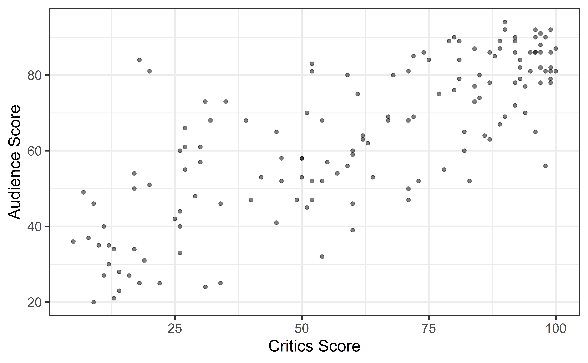
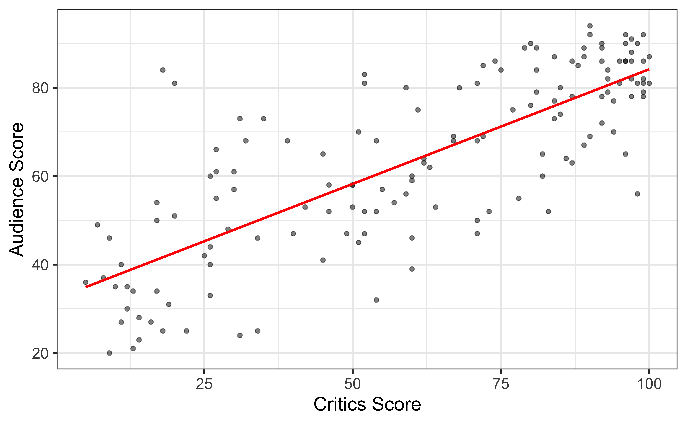
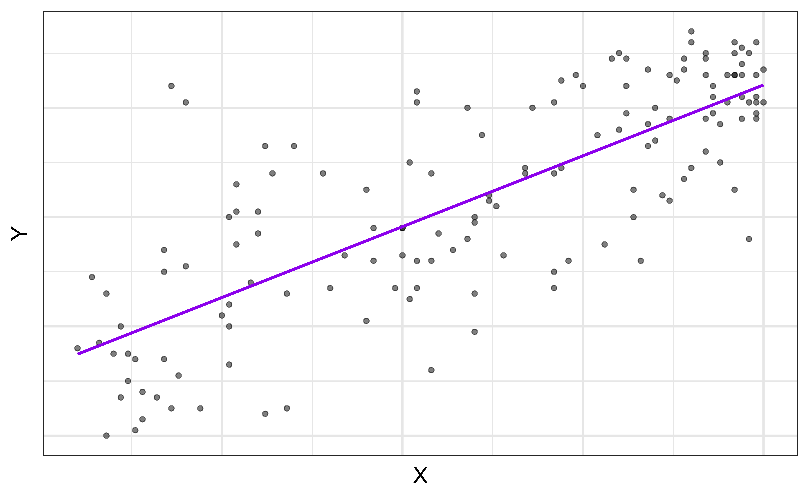
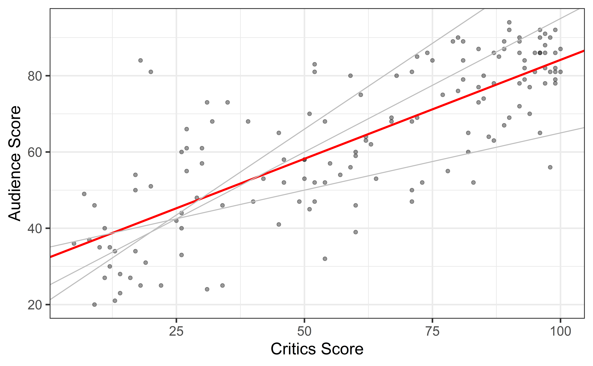
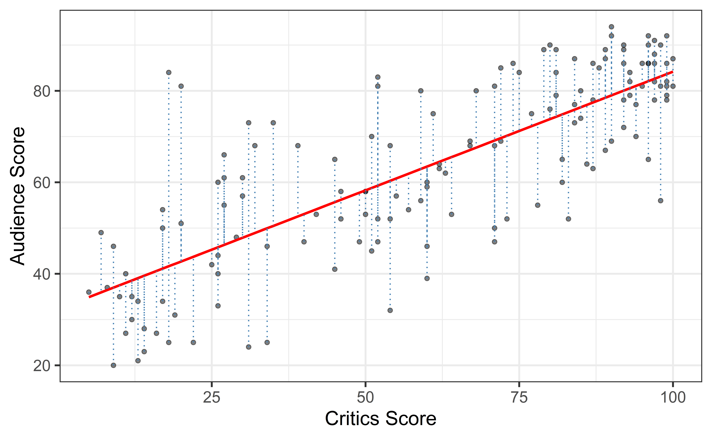
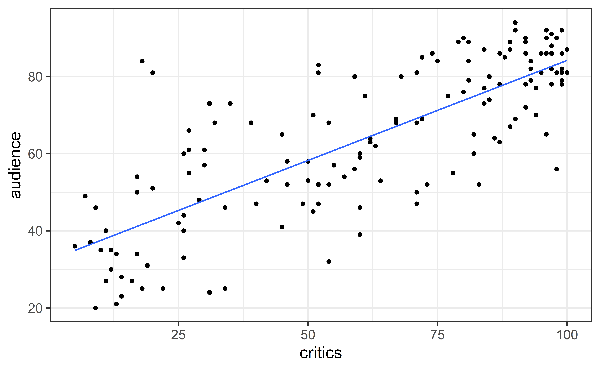

# load packages
library(tidyverse) # for data wrangling
library(ggformula) # for plotting
library(fivethirtyeight) # for the fandango dataset
library(broom) # for formatting model output
library(knitr) # for formatting tables
# set default theme and larger font size for ggplot2
ggplot2::theme_set(ggplot2::theme_bw(base_size = 16))
# set default figure parameters for knitr
knitr::opts_chunk$set(
fig.width = 8,
fig.asp = 0.618,
fig.retina = 3,
dpi = 300,
out.width = "80%"
)Simple Linear Regression
Application exercise
Topics
Use simple linear regression to describe the relationship between a quantitative predictor and quantitative response variable.
Estimate the slope and intercept of the regression line using the least squares method.
Interpret the slope and intercept of the regression line.
Predict the response given a value of the predictor variable.
Use R to fit and summarize regression models.
Computation set up
Data
Movie scores
- Data behind the FiveThirtyEight story Be Suspicious Of Online Movie Ratings, Especially Fandango’s
- In the fivethirtyeight package:
fandango - Contains every film released in 2014 and 2015 that has at least 30 fan reviews on Fandango, an IMDb score, Rotten Tomatoes critic and user ratings, and Metacritic critic and user scores


Data prep
- Rename Rotten Tomatoes columns as
criticsandaudience - Rename the dataset as
movie_scores
movie_scores <- fandango |>
rename(critics = rottentomatoes,
audience = rottentomatoes_user)Data overview
glimpse(movie_scores)Rows: 146
Columns: 23
$ film <chr> "Avengers: Age of Ultron", "Cinderella", "A…
$ year <dbl> 2015, 2015, 2015, 2015, 2015, 2015, 2015, 2…
$ critics <int> 74, 85, 80, 18, 14, 63, 42, 86, 99, 89, 84,…
$ audience <int> 86, 80, 90, 84, 28, 62, 53, 64, 82, 87, 77,…
$ metacritic <int> 66, 67, 64, 22, 29, 50, 53, 81, 81, 80, 71,…
$ metacritic_user <dbl> 7.1, 7.5, 8.1, 4.7, 3.4, 6.8, 7.6, 6.8, 8.8…
$ imdb <dbl> 7.8, 7.1, 7.8, 5.4, 5.1, 7.2, 6.9, 6.5, 7.4…
$ fandango_stars <dbl> 5.0, 5.0, 5.0, 5.0, 3.5, 4.5, 4.0, 4.0, 4.5…
$ fandango_ratingvalue <dbl> 4.5, 4.5, 4.5, 4.5, 3.0, 4.0, 3.5, 3.5, 4.0…
$ rt_norm <dbl> 3.70, 4.25, 4.00, 0.90, 0.70, 3.15, 2.10, 4…
$ rt_user_norm <dbl> 4.30, 4.00, 4.50, 4.20, 1.40, 3.10, 2.65, 3…
$ metacritic_norm <dbl> 3.30, 3.35, 3.20, 1.10, 1.45, 2.50, 2.65, 4…
$ metacritic_user_nom <dbl> 3.55, 3.75, 4.05, 2.35, 1.70, 3.40, 3.80, 3…
$ imdb_norm <dbl> 3.90, 3.55, 3.90, 2.70, 2.55, 3.60, 3.45, 3…
$ rt_norm_round <dbl> 3.5, 4.5, 4.0, 1.0, 0.5, 3.0, 2.0, 4.5, 5.0…
$ rt_user_norm_round <dbl> 4.5, 4.0, 4.5, 4.0, 1.5, 3.0, 2.5, 3.0, 4.0…
$ metacritic_norm_round <dbl> 3.5, 3.5, 3.0, 1.0, 1.5, 2.5, 2.5, 4.0, 4.0…
$ metacritic_user_norm_round <dbl> 3.5, 4.0, 4.0, 2.5, 1.5, 3.5, 4.0, 3.5, 4.5…
$ imdb_norm_round <dbl> 4.0, 3.5, 4.0, 2.5, 2.5, 3.5, 3.5, 3.5, 3.5…
$ metacritic_user_vote_count <int> 1330, 249, 627, 31, 88, 34, 17, 124, 62, 54…
$ imdb_user_vote_count <int> 271107, 65709, 103660, 3136, 19560, 39373, …
$ fandango_votes <int> 14846, 12640, 12055, 1793, 1021, 397, 252, …
$ fandango_difference <dbl> 0.5, 0.5, 0.5, 0.5, 0.5, 0.5, 0.5, 0.5, 0.5…Movie scores data
The data set contains the “Tomatometer” score (critics) and audience score (audience) for 146 movies rated on rottentomatoes.com.
Code
movie_scores |>
gf_point(audience ~ critics, alpha = 0.5) +
labs(x = "Critics Score" ,
y = "Audience Score")
Movie ratings data
Goal: Fit a line to describe the relationship between the critics score and audience score.
`geom_smooth()` using formula = 'y ~ x'Why fit a line?
We fit a line to accomplish one or both of the following:
. . .
Prediction
What is the audience score expected to be for an upcoming movie that received 35% from the critics?
. . .
Inference
Is the critics score a useful predictor of the audience score? By how much is the audience score expected to change for each additional point in the critics score?
Terminology
Response, Y: variable describing the outcome of interest
Predictor, X: variable we use to help understand the variability in the response
`geom_smooth()` using formula = 'y ~ x'
Regression model
Regression model: a function that describes the relationship between a quantitive response, \(Y\), and the predictor, \(X\) (or many predictors).
\[\begin{aligned} Y &= \color{black}{\textbf{Model}} + \text{Error} \\[8pt] &= \color{black}{\mathbf{f(X)}} + \epsilon \\[8pt] &= \color{black}{\boldsymbol{\mu_{Y|X}}} + \epsilon \end{aligned}\]Regression model
\[\begin{aligned} Y &= \color{purple}{\textbf{Model}} + \text{Error} \\[8pt]
&= \color{purple}{\mathbf{f(X)}} + \epsilon \\[8pt]
&= \color{purple}{\boldsymbol{\mu_{Y|X}}} + \epsilon \end{aligned}\]
`geom_smooth()` using formula = 'y ~ x'
\(\mu_{Y|X}\) is the mean value of \(Y\) given a particular value of \(X\).
Regression model
\[ \begin{aligned} Y &= \color{purple}{\textbf{Model}} + \color{blue}{\textbf{Error}} \\[5pt] &= \color{purple}{\mathbf{f(X)}} + \color{blue}{\boldsymbol{\epsilon}} \\[5pt] &= \color{purple}{\boldsymbol{\mu_{Y|X}}} + \color{blue}{\boldsymbol{\epsilon}} \\[5pt] \end{aligned} \]
`geom_smooth()` using formula = 'y ~ x'
Simple linear regression (SLR)
SLR: Statistical model
- Simple linear regression: model to describe the relationship between \(Y\) and \(X\) where:
- \(Y\) is a quantitative/numerical reponse
- \(X\) is a single quantitative predictor +\[\Large{Y = \mathbf{\beta_0 + \beta_1 X} + \epsilon}\]
. . .
- \(\beta_1\): True slope of the relationship between \(X\) and \(Y\)
- \(\beta_0\): True intercept of the relationship between \(X\) and \(Y\)
- \(\epsilon\): Error
SLR: Regression equation
\[\Large{\hat{Y} = \hat{\beta}_0 + \hat{\beta}_1 X}\]
- \(\hat{\beta}_1\): Estimated slope of the relationship between \(X\) and \(Y\)
- \(\hat{\beta}_0\): Estimated intercept of the relationship between \(X\) and \(Y\)
- \(\hat{Y}\): Predicted value of \(Y\) for a given \(X\)
- No error term!
Choosing values for \(\hat{\beta}_1\) and \(\hat{\beta}_0\)
Warning: Using `size` aesthetic for lines was deprecated in ggplot2 3.4.0.
ℹ Please use `linewidth` instead.
Residuals
`geom_smooth()` using formula = 'y ~ x'
\[\text{residual} = \text{observed} - \text{predicted} = y_i - \hat{y}_i\]
Least squares line
- Residual for the \(i^{th}\) observation:
\[e_i = \text{observed} - \text{predicted} = y_i - \hat{y}_i\]
- Sum of squared residuals:
\[e^2_1 + e^2_2 + \dots + e^2_n\]
- Least squares line is the one that minimizes the sum of squared residuals
Slope and intercept
Properties of least squares regression
Passes through center of mass point, the coordinates corresponding to average \(X\) and average \(Y\): \(\hat{\beta}_0 = \bar{Y} - \hat{\beta}_1\bar{X}\)
Slope has same sign as the correlation coefficient: \(\hat{\beta}_1 = r \frac{s_Y}{s_X}\)
Sum of the residuals is zero: \(\sum_{i = 1}^n e_i \approx 0\)
The residuals and \(X\) values are uncorrelated
Estimating the slope
\[\large{\hat{\beta}_1 = r \frac{s_Y}{s_X}}\]
\[\begin{aligned}
s_X &= 30.1688 \\
s_Y &= 20.0244 \\
r &= 0.7814
\end{aligned}\]
\[\begin{aligned}
\hat{\beta}_1 &= 0.7814 \times \frac{20.0244}{30.1688} \\
&= 0.5187\end{aligned}\]
Clickhere for details on deriving the equations for slope and intercept which is easy if you know multivariate calculus.
Estimating the intercept
\[\large{\hat{\beta}_0 = \bar{Y} - \hat{\beta}_1\bar{X}}\]
\[\begin{aligned}
&\bar{x} = 60.8493 \\
&\bar{y} = 63.8767 \\
&\hat{\beta}_1 = 0.5187
\end{aligned}\]
\[\begin{aligned}\hat{\beta}_0 &= 63.8767 - 0.5187 \times 60.8493 \\
&= 32.3142
\end{aligned}\]
Click here for details on deriving the equations for slope and intercept.
Interpretation
Post your answers to the following questions on Ed Discussion:
The slope of the model for predicting audience score from critics score is 0.5187 . Which of the following is the best interpretation of this value?
32.3142 is the predicted mean audience score for what type of movies?
Link for Section 001 (10:05am lecture)
Link for Section 002 (1:25pm lecture)
03:00
Does it make sense to interpret the intercept?
. . .
✅ The intercept is meaningful in the context of the data if
the predictor can feasibly take values equal to or near zero, or
there are values near zero in the observed data.
. . .
🛑 Otherwise, the intercept may not be meaningful!
Prediction
Making a prediction
Suppose that a movie has a critics score of 70. According to this model, what is the movie’s predicted audience score?
\[\begin{aligned} \widehat{\text{audience}} &= 32.3142 + 0.5187 \times \text{critics} \\ &= 32.3142 + 0.5187 \times 70 \\ &= 68.6232 \end{aligned}\]Fitting the model
Fit model & estimate parameters
Look at the regression output
Call:
lm(formula = audience ~ critics, data = movie_scores)
Coefficients:
(Intercept) critics
32.3155 0.5187 \[\widehat{\text{audience}} = 32.3155 + 0.5187 \times \text{critics}\]
. . .
Note: The intercept is off by a tiny bit from the hand-calculated intercept, this is just due to rounding in the hand calculation.
The regression output
We’ll focus on the first column for now…
Format output with kable
Use the kable function from the knitr package to produce a table and specify number of significant digits
Visualize Model
movie_scores |>
gf_point(audience ~ critics) |>
gf_lm()Warning: Using the `size` aesthetic with geom_line was deprecated in ggplot2 3.4.0.
ℹ Please use the `linewidth` aesthetic instead.